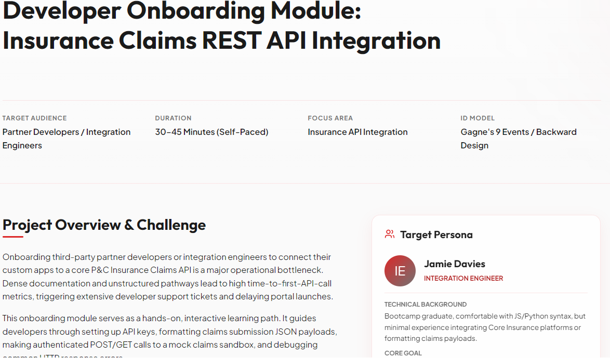
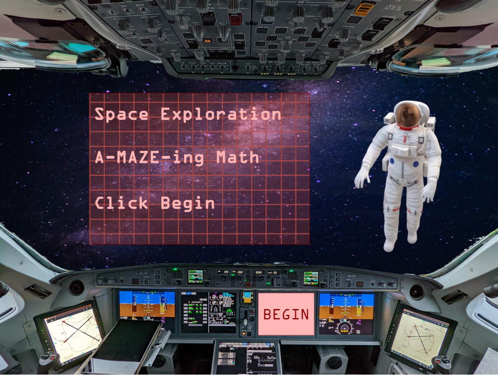
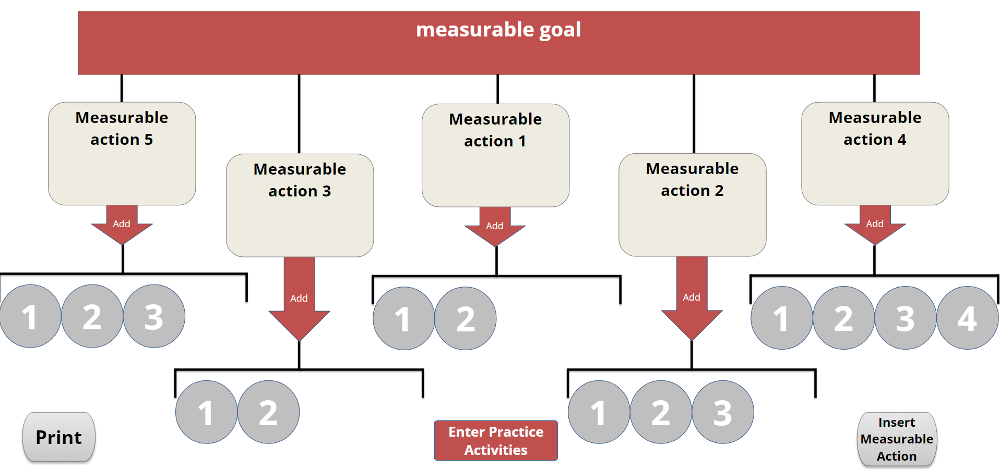
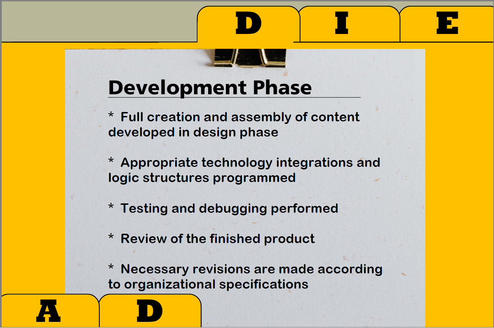
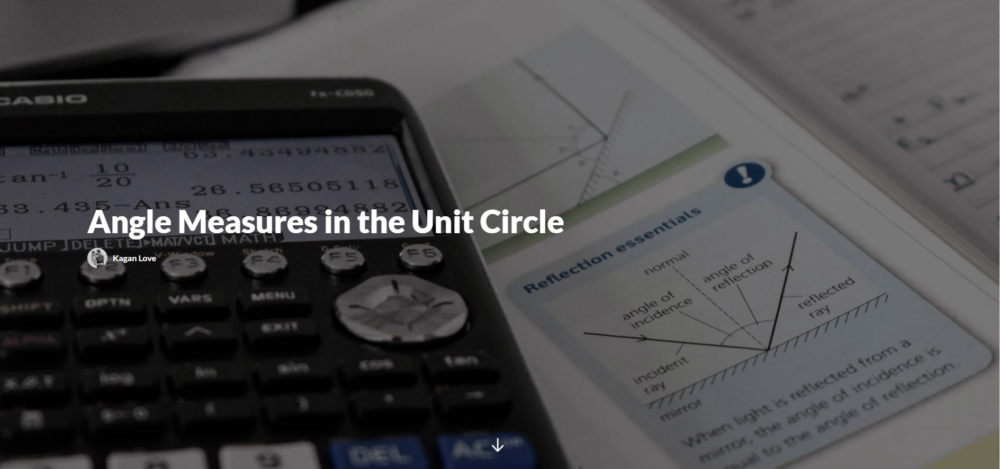
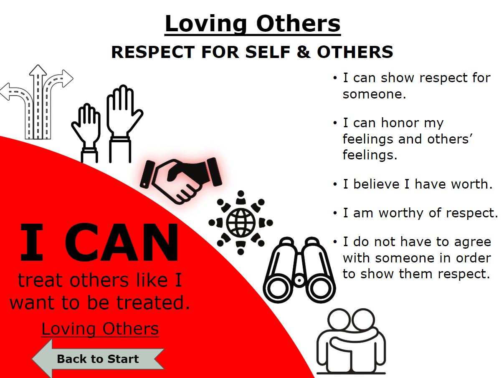
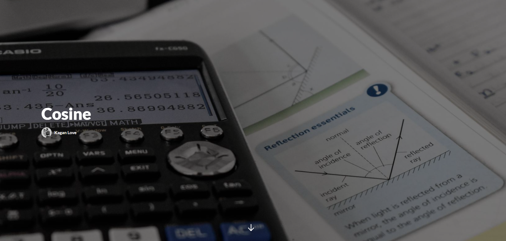
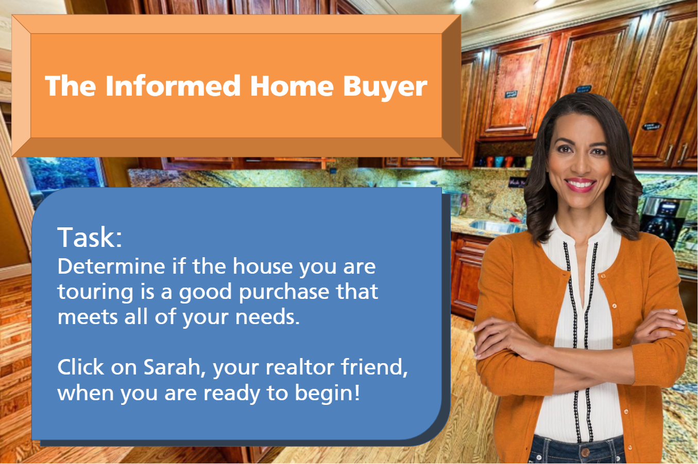
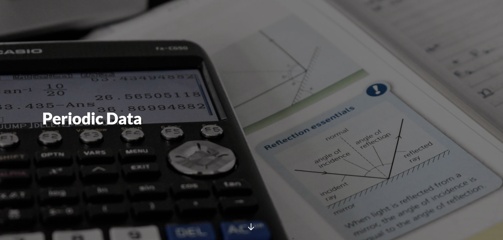

I design high-impact learning experiences that translate complex technologies into digestible, action-oriented curricula. Specializing in developer onboarding, API documentation tutorials, and interactive training environments.
A selection of my work spanning technical onboarding, interactive scenario-based courses, and standard eLearning packages.

A comprehensive self-paced onboarding module built to train integration engineers on connecting to a P&C Insurance Claims REST API, complete with interactive code panels and quizzes.

A gamified, interactive maze challenge developed to increase math fluency and student engagement through scaffolded problem-solving.

Interactive mapping exercise structured to train designers on Cathy Moore's Action Mapping methodology to focus training on real-world business activities.

A step-by-step instructional training package outlining the core phases of the ADDIE design workflow: Analyze, Design, Develop, Implement, and Evaluate.

A technical, fully responsive learning asset mapping degree-to-radian measurements and coordinates inside the mathematical Unit Circle.

An interactive mapping tool designed for Christ Counseling Ministry (CCM) to help users navigate complex emotional states and access psychological and scriptural affirming statements.

Interactive physics and mathematics walkthrough illustrating waves, wave amplitudes, phase angles, and vertical shifts.

An interactive 3D virtual environment built in Storyline that lets learners maneuver through rooms, inspecting features to identify positive and negative buying indicators.

A detailed curriculum unit demonstrating how periodic structures (seasons, tides, wave frequencies) are translated into mathematical models.
My professional values, instructional background, and tech capabilities.
Instructional Designer and eLearning Developer with 10+ years of experience creating adult learning solutions and digital learning experiences for complex subject matter and diverse learner populations.
Skilled in end-to-end learning design, learning strategy, stakeholder collaboration, and workflow-aligned learning that supports performance, usability, and measurable outcomes.
How I construct scalable, result-driven training curricula.
I start by analyzing performance gaps and building clear learner profile templates to align training with the audience's baseline skillset.
I define learning objectives mapped to Bloom's taxonomy, establishing assessment targets before writing any course content.
I build rapid, wireframe storyboard flows in Figma or Rise 360 to iterate with Subject Matter Experts (SMEs) prior to core development.
I develop custom assets, interactive visual elements, code exercises, or high-fidelity screencasts to structure hands-on labs.
I conduct detailed UX testing and run accessibility reviews (color contrast checks, screen-reader tab orders) before deployment.
Over a decade of designing learning frameworks, coordinating technical courses, and leading training initiatives.
Formal training in educational technology, curriculum design, and quantitative sciences.
Southeastern Oklahoma State University | 2022 – 2023
Advanced study of adult learning theories, online instructional methodologies, e-learning product development, and data-driven curriculum assessment models.
Midwestern State University | 2008 – 2013
Rigorous training in quantitative analysis, logical modeling, and scientific documentation—skills leveraged to map complex logic flows and technical workflows.
Have an instructional challenge or looking to fill a technical curriculum role? Get in touch.